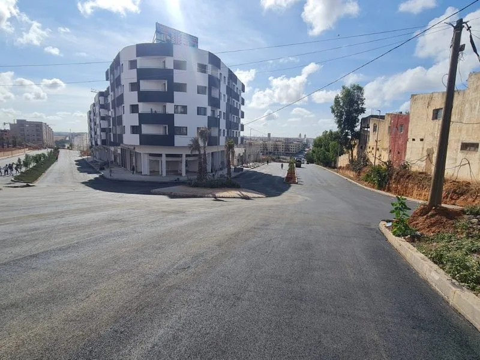

Voirie & Réseaux Divers VRD au Maroc
Routes, trottoirs, bordures, aménagement urbain et réhabilitation de voirie — WAHID EASY TRAVAUX, votre partenaire VRD de confiance à Casablanca et dans tout le Maroc.

Expert VRD & Voirie au Maroc depuis 10 ans
Les travaux de Voirie et Réseaux Divers (VRD) constituent le cœur de métier de WAHID EASY TRAVAUX. Notre équipe d'ingénieurs et de techniciens spécialisés maîtrise l'ensemble des techniques de construction et réhabilitation de voirie urbaine et routière au Maroc.
De la simple réfection de trottoir à la création d'une route complète, en passant par l'aménagement de zones industrielles et de parkings, nous intervenons sur tous types de projets VRD à Casablanca, Rabat, Tanger, Marrakech et dans tout le Maroc.
Voirie et Réseaux Divers — Prestations complètes
Les travaux VRD au Maroc englobent toutes les opérations liées à la création et à la réhabilitation des voies de circulation, des espaces publics et des réseaux enterrés. WAHID EASY TRAVAUX assure la réalisation complète de ces travaux, depuis la préparation du fond de forme jusqu'à la pose des revêtements définitifs, avec une maîtrise totale de chaque étape.
Travaux de voirie
Création et réhabilitation de routes
Nous réalisons la création de routes neuves et la réhabilitation de voiries existantes dans le respect des normes techniques marocaines. Chaque chantier commence par une étude de sol et un dimensionnement de la chaussée adapté aux charges de trafic prévues.
- Terrassement et préparation du fond de forme
- Mise en œuvre de couches de fondation (GNT, grave bitume)
- Pose de couche de base en béton bitumineux
- Revêtement en enrobé bitumineux ou béton
- Marquage routier et signalisation horizontale
- Pose de glissières de sécurité et équipements de voirie
Trottoirs, bordures et caniveaux
L'aménagement des trottoirs et accotements est indispensable pour garantir la sécurité des piétons et le bon écoulement des eaux pluviales. Nous réalisons la pose de bordures, caniveaux et dalles de trottoir conformément aux plans d'aménagement.
- Pose de bordures béton préfabriquées (T1, T2, CS1)
- Mise en œuvre de dalles piétonnes et pavés autobloquants
- Création de caniveaux et cunettes pour eaux pluviales
- Aménagement de rampes d'accès PMR
Parkings et voiries privées
Pour les zones commerciales, résidences, hôtels et zones industrielles, nous réalisons la conception et la construction de parkings et voiries privées à Casablanca et dans tout le Maroc, avec des revêtements adaptés (enrobé, béton, pavés).
Travaux de réseaux divers
Réseaux d'assainissement pluvial
La gestion des eaux pluviales est un enjeu majeur dans les projets de VRD. Nous réalisons la pose de réseaux d'assainissement pluvial, de bassins de rétention et de noues paysagères pour protéger les voiries des inondations.
Réseaux électriques souterrains
Dans le cadre des projets VRD, nous assurons la pose de fourreaux et câbles électriques souterrains pour l'alimentation en électricité et l'éclairage public des voiries aménagées.
Réseaux télécom et fibre optique
Nous réalisons les tranchées et la pose de fourreaux télécom pour les réseaux de télécommunications, en coordination avec les opérateurs marocains (Maroc Telecom, INWI, Orange).
Nos références VRD au Maroc
WAHID EASY TRAVAUX a réalisé des chantiers VRD pour des clients variés :
- Communes et municipalités (voiries urbaines et rurales)
- Promoteurs immobiliers (viabilisation de lotissements)
- Zones d'activités industrielles (ZI Casablanca)
- Complexes hôteliers et touristiques (Marrakech, Agadir)
- Établissements universitaires et scolaires
Pourquoi choisir WAHID EASY TRAVAUX pour vos travaux VRD ?
Maîtrise technique VRD
Ingénieurs VRD qualifiés, maîtrise des normes marocaines et des cahiers des charges techniques.
Coordination tous corps d'état
Gestion complète des interfaces entre voirie, assainissement, électricité et réseaux télécom.
Respect des délais
Planning rigoureux et suivi quotidien. Les routes et voiries sont livrées dans les délais contractuels.
Marchés publics & privés
Expérience confirmée sur les marchés publics (communes, collectivités) et les projets privés.
Tarifs compétitifs
Devis VRD détaillé, prix compétitifs sur le marché marocain, sans compromis sur la qualité.
Couverture nationale
Casablanca, Rabat, Tanger, Marrakech, Agadir — nous intervenons dans tout le Maroc.
Déroulement d'un chantier VRD
Étude & conception
Analyse du projet, lecture des plans, étude du sol et dimensionnement de la chaussée.
Devis détaillé
Proposition chiffrée complète avec détail des matériaux, main-d'œuvre et délais.
Terrassement
Préparation du fond de forme, déblaiement et réglage des niveaux.
Réseaux enterrés
Pose des canalisations, câbles et fourreaux avant remblaiement.
Revêtement
Mise en œuvre des couches de chaussée, bordures, trottoirs et finitions.
Réception & livraison
Réception contradictoire, nettoyage du chantier et remise des documents de fin de travaux.
Travaux VRD dans tout le Maroc
Basée à Casablanca, notre équipe VRD intervient dans toutes les grandes villes du Maroc pour vos projets de voirie et réseaux divers.
FAQ — VRD & Voirie Maroc
La voirie désigne uniquement les travaux de création et réhabilitation des voies de circulation. Les VRD (Voirie et Réseaux Divers) sont plus larges : ils incluent la voirie mais aussi tous les réseaux enterrés (assainissement, eau potable, électricité, télécom). WAHID EASY TRAVAUX maîtrise l'ensemble du périmètre VRD.
Oui, nous prenons en charge la viabilisation complète de lotissements résidentiels et industriels : voiries, assainissement, réseau d'eau potable, électricité basse tension et éclairage public. Nous coordonnons l'ensemble des intervenants pour une livraison clé en main.
Oui, WAHID EASY TRAVAUX dispose des qualifications et références nécessaires pour soumissionner et réaliser des marchés publics de VRD et voirie pour les communes, provinces et établissements publics marocains. Contactez-nous pour discuter de votre appel d'offres.
Nous utilisons des enrobés bitumineux conformes aux normes marocaines (NM). Selon le trafic et les contraintes du projet, nous optons pour des bétons bitumineux semi-grenus (BBSG), des bétons bitumineux à module élevé (BBME) ou des enrobés drainants pour les zones à fortes précipitations.